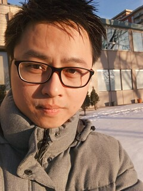

Bach Le, Ph.D.
Tenured Assistant Professor/Confirmed Continuing Lecturer
School of Computing and Information Systems
University of Melbourne, Australia
Australian Research Council DECRA Fellow (2022-2024)
Email: bach.le@unimelb.edu.au
Tel: (61) 0448028760
My CV,
Summary of My Career
Google scholar
About me
I am always looking for students to work with. See News below.
I am having an opening for a postdoc position on broad areas of Software Engineering, starting from Jan 2024.
Contact me if you are interested.
"Curiosity is the wick in the candle of learning." - William Arthur Ward
I'm Bach Le (known in my publications as Xuan-Bach D. Le). I'm currently an tenured Assistant Professor/Lecturer at the University of Melbourne, Australia.
I am also an Australian Research Council DECRA Fellow (from 2022 to 2024).
Previously, I was a postdoc at Carnegie Mellon University, working with ACM Distinguished Scientist & Associate Prof. Corina Pasareanu.
I received my PhD from Singapore Management University in June 2018, under supervision of ACM Distinguished Member & UOB Chair Professor David Lo.
My research interests span software engineering and programming languages, including: software mining, empirical software engineering, program analysis, repair, synthesis, and verification.
I am passionate about teaching and have been co-ordinating/lecturing on various subjects including theory subjects such as Models of Computation (600 students),
Programing Languange Implementation - Compiler Theory (45 students),
and practical subjects such as Software Project (130 students),
Object-oriented Software Development (400 students).
My CV is available here [CV].
Summary of my career and contributions is available here
[Summary].
If my profile looks like a potentially good fit in your team,
please drop me a brief email :).
News
- Aug 2023: I am now Tenured at The University of Melbourne.
- July 2023: Awarded a small seed grant on Formally Verified Syntax- and Semantics-Guided Automatic Proof Repair with Christine Rizkallah.
- August 2021: Awarded $438K + $50K ARC DECRA funding (Sole PI) starting from Jan 2022 (Australian Research Council funding for Discovery Early Career Researcher Award), acceptance rate across disciplines 20% (reference).
- July 2021: Three full research papers about automated bug fixing accepted at ISSRE'21.
- Dec 2020: Awarded $20K funding for Early Career Researcher at School of Computing and Information Systems. Project title: Refixar: Practical Automated Repair of Software Regression Errors.
- Dec 2020, Our paper entitled: "Exploring True Test Overfitting in Dynamic Automated Program Repair using Formal Methods" has been accepted to ICST'21
- Collaborative funding (NSF Medium) on Fuzzing and Repair @ Carnegie Mellon University, University of California Berkeley, University of California Santa Barbara. I helped in part write the proposal with my advisor Assoc/Prof. Corina at CMU. This allows us to continue our collaborations when I am now at UniMelb.
- Joined University of Melbourne, Australia as a Lecturer (a.k.a Assistant Professor) in July, 2019.
-
Students wanted @ Melbourne: Prospective students please check eligibility and contact me. Scholarships are available, e.g., China scholarships council, Melbourne graduate research scholarships, and more. Nearest application deadlines are 1 March and 17 May 2019. There are also potential research collaborations with Carnegie Mellon University, Singapore Mangement University, etc. The University of Melbourne is ranked 14th worldwide on Computing and Information Systems in 2018.
- [Now Closed]Google Summer of Code 2019: I'm serving as a mentor for GSoC 2019 for Java PathFinder team. Students interested in program repair using program analysis, symbolic execution, or something along that line are encouraged to contact me for further details.
- Serving as a Program Committee member for ISSTA'20 Research Track, ASE'20 Research Track, ASE'19 Demonstration Track and ICSE'20 NIER Track
Education & Appointments
Assistant Professor, The University of Melbourne, Australia, July’19 - Present
Australian Research Council Discovery Early Career Researcher Award (ARC DECRA) Fellow, Jan’22 - Present
PostDoc, Carnegie Mellon University, Silicon Valley, June’18 - June'19
Supported by DARPA STAC program, ISSTAC project.
Topic: Software Security, Advisor: ACM Dishtinguished Scientist & Assoc. Prof. Corina Pasareanu
PhD Candidate, Singapore Management University, Singapore, Jan’14 - May’18
Supported by LARC-Carnegie Mellon University collaboration program.
Topic: Automatic software repair, Advisor: Prof. David Lo
PhD Residency Training, Carnegie Mellon University, Pittsburgh USA, Aug’15 - June’16
Under LARC-CMU collaboration program, supported by Singapore Ministry of Education.
Topic: Automatic software repair, Host: Assoc. Prof. Claire Le Goues
BSc (Hons), Hanoi University of Science and Technology, Vietnam, Aug’07 - May’12
Topic: SAT solvers and its application in software verification
Advisors: Assoc. Prof. HUYNH Quyet Thang, and Assoc. Prof. Wei Ngan Chin
Research Assistant, National University of Singapore, Singapore, Aug’12 - Nov’13
Topic: Static software verification using SAT and Separation Logic
Advisor: Assoc. Prof. Wei Ngan Chin
Research Intern, National University of Singapore, Singapore, Feb’12 - May’12
Topic: Static software verification using SAT and Separation Logic
Advisor: Assoc. Prof. Wei Ngan Chin
Undergraduate Intern, Nagoya University, Japan, Aug’12
Topic: Building a social network application, Host: Prof. Toyohide WATANABE
High School Student, Phan Boi Chau High School for Gifted students, Nghe An, Vietnam, May'05 - May'07
Mathematics-specialized class
First prize - Highest score (Thủ Khoa) at Mathematical Olympiads, Nghe An province, 2005
First prize - Highest score (Thủ Khoa) at Mathematical Olympiads, Nghe An province, 2000
Others
Languages: Vietnamese (native), English (TOEFL iBT:97/120 with Writing:27/30 ~ IELTS:7.0), and Japanese (intermediate, level 2 of Japanese Language Proficiency Test in 2009)
Teaching:
- COMP30026: Models of Computation (Propositional Logic, Predicate Logic, SAT, Automata Theory), Undergrad level, Semester 2, 2022
- COMP30026: Models of Computation (Propositional Logic, Predicate Logic, SAT, Automata Theory), Undergrad level, Semester 2, 2021
- SWEN20003: Object Oriented Software Development, Undergrad level, Semester 1, 2020; Semester 1, 2021
- SWEN90014: Masters Software Engineering Project, Graduate level, Semester 2, 2020
- COMP90045: Programming Language Implementation (Compiler Theory), Graduate level, Semester 2, 2020
- Guest Lecturer: Program Analysis and Modeling, Graduate level, SMU, 2018
- Teaching Assistant: Software Mining and Analysis, Graduate level, SMU, 2018
- Teaching Assistant: Analytics Foundations, Undergraduate level course, SMU, 2017
Academic Services:
- Chairing:
- SOICT'23 SE Track, ICBC'22 (Intl Conf on Blockchain) Demo Track, ASE'21 SRC Track
- Committee Member:
- ICSE'23, ICSE'22 SEIS, APR'22, MSR'22 Data, ASE'20 Research Track, ISSTA'20 Research Track, ICSE'20 NIER, GI@ ICSE'20, ASE'19 Demo, ISSTA'19 Artifact Evaluation Committee, QRS'19, International Workshop on Intelligent Bug Fixing (IBF'19), National Software Application Conference (NASAC'19), Software Engineering Conference (ISEC'20)
- Reviewer:
- 2020: Transactions on Dependable and Secure Computing (TDSC) Journal, Science of Computer Programming, EMSE
- 2019: TSE Journal, TOSEM Journal, Computers Journal, JSS, Knowledge and Information Systems, IEEE Access Journal, IST Journal, Software Quality Journal (SQJ)
- 2018: Journal of Systems and Software (JSS) - Transactions on Software Engineering and Methodology (TOSEM) - Software Testing, Verification and Reliability (STVR) - Information and Software Technology (IST) - Journal of Computer and Communications (JCC)
- 2017: Empirical Software Engineering Journal (EmSE)
- Sub(External)-reviewer:
- 2019: ECOOP, ASE, ESEC/FSE
- 2018: SCAM, ESEC/FSE (Tool Track)
- 2017: ICSME, IWESEP, VL/HCC, RV
- 2016: SAC, SATE, MSR (data track), ICECCS, APSEC
- 2014: POPL
- 2013: SAC
For conference ranking, please refer to: Core
Keywords: Program Repair, Symbolic Execution, Program Synthesis, Separation Logic, Specification Mining, Defect Categorization, Machine Learning & Data Mining Application.
All my works/projects here in SMU have been supported by the Singapore Ministry of Education. I am particularly supported by Living Analytics Research Center (LARC), Singapore Management University. We are also grateful to various collaborators at various institutions/universities such as National University of Singapore, Stellenborsch University, Carnegie Mellon University, and so on.Acknowledgements:
My Research Group:
- Thanh-Dat Nguyen, PhD student at Unimelb (April 2021 - now, leave of absence from June 2021 - Jan 2022)
- Thanh Le Cong, PhD student at Unimelb (Feb 2023 - now), working with me since 2019
- Vinay Kabadi, (part-time) PhD student at Unimelb (Jan 2020), currently on leave of absence
Alumni:
- Shubham Parth (co-advised by Thuan Pham), Master's student at University of Melbourne, 2020-2021 (Graduated). Topic: Smart Contracts
- Chijiang Yang, Master's student at University of Melbourne, 2020-2021 (Graduated). Topic: Fault Localization
- Ishan Maholtra, Master's student at University of Melbourne, 2019-2020 (Graduated). Topic: Automated Program Repair
- Hanliang Zhang, Undergraduate student from Peking University, China, participated in Google Summer of Code 2019. Topic: Automatic Repair of Null Pointer Exceptions.
- Siyu Xie, Undergraduate student from Zhejiang University, China (now at Rice University, USA), visited SMU during 2017-2018. Topic: Empirical Study and Benchmark for Automatic Program Repair of Regression Errors.
My Research Theme: My research revolves around the development of automated techniques and tools for software debugging, guided by actionable insights learned from human and empirical studies. In particular, my research in human and empirical studies offers deeper understanding of the critical needs in current software development cycle. Subsequently, actionable insights learned from the studies can be used to realize automated tools/techniques in effective ways to help aid developers in developing more reliable software in a timely manner, reducing manual costs. Early on, I focus on researching the use of Data Mining, Machine Learning, Software Testing and Verification, Program Analysis and Synthesis to automatically detect and repair software bugs. Fast forward, togerther with my students, I am also currently exploring the use of automated debugging techniques to guarantee the safety and security of AI models.
[Software Verification, Book Chapter] Recent Advances in Symbolic Pathfinder. |
[ASE'23] Are We Ready to Embrace Generative AI for Software Q&A? |
[ICSME'23] The Future Can’t Help Fix The Past: Assessing Program Repair In The Wild |
[TSE'23] Multi-Granularity Detector for Vulnerability Fixes. |
[TSE'23] Invalidator: Automated Patch Correctness Assessment via Semantic and Syntactic Reasoning. |
[ICSE'23] Chronos: Time-Aware Zero-Shot Identification of Libraries from Vulnerability Reports. |
[FoSSaCS'23] An Efficient Cyclic Entailment Procedure in a Fragment of Separation Logic. |
[ESEC/FSE'22] VulCurator: A Vulnerability-Fixing Commit Detector. |
[ESEC/FSE'22] AutoPruner: Transformer-based Call Graph Pruning. |
[ICSME'22] FFL: Fine grained Fault Localization for Student Programs via Syntactic and Semantic Reasoning. |
[ISSTA'22] Test Mimicry to Assess the Exploitability of Library. |
[ICSE'22] Toward the Analysis of Graph Neural Networks. |
[ISSRE'21] REFIXAR: Multi-version Reasoning for Automated Repair of Regression Errors. |
[ISSRE'21] More Reliable Test Suites for Dynamic Program Repair by Using Counterexamples. |
[ISSRE'21] Usability and Aesthetics: Better Together for Automated Repair of Web Pages. |
[ICST'21] Exploring True Test Overfitting in Dynamic Automated Program Repair using Formal Methods |
[TSE'19] Smart Contract Development: Challenges and Opportunities |
[JPF'19] SAFFRON: Adaptive Grammar-based Fuzzing for Worst-Case Analysis |
|
[SV-COMP'19] Symbolic Pathfinder for SV-COMP |
|
[ICSE'19] On Reliability of Patch Correctness Assessment |
|
[EmSE-ICSE'18] Overfitting in Semantics-Based Automated Program Repair (*) |
|
[ESEC/FSE'17] S3: Syntax- and Semantic-Guided Repair Synthesis via Programming by Examples |
|
[ISSTA'17] JFIX: Semantics-Based Repair of Java Programs via Symbolic PathFinder |
|
[ESEC/FSE'17]
XSearch: A Domain-Specific Cross-Language Relevant Question Retrieval Tool |
|
[ICSME'16] Empirical Study on Synthesis Engines for Semantics-based Program Repair |
|
[ICSME'16] Enhancing Automated Program Repair with Deductive Verification |
|
[ICSME'16] Recommending Code Changes for Automatic Backporting of Linux Device Drivers |
|
[ASE'16] Towards Efficient and Effective Automatic Program Repair |
|
[SANER'16]
History Driven Program Repair |
|
[ISSRE'15] Should Fixing These Failures be Delegated to Automated Program Repair? (*) |
|
[ASE'15] Synergizing Specification Miners through Model Fissions and Fusions |
|
[ICPC'15] Active Semi-supervised Defect Categorization |
Random stuff in Vietnamese: Học PhD và tìm academic jobs. Mấy hôm dịch dã, có chút thời gian nên mình ngồi viết một ít chia sẻ về quãng đường học và tìm việc của mình. Sơ qua, mình học đại học ở VN, qua Sing làm PhD, qua Mỹ một thời gian làm visiting scholar trong quá trình học PhD, và làm postdoc tại Mỹ một năm trước lúc về Úc làm giảng viên (ở Mỹ gọi là Assitant Professor). Mình có nhận được một số offers như Assistant Professor ở Mỹ, Associate Professor ở Nhật, và Lecturer ở Úc. Mình thảo luận cùng vợ và thuyết phục vợ cùng về Úc. Là cả một câu chuyện dài, mình lai rai dưới đây từ quá trình học đến bước chập chững vào career bây giờ.
Mục 1: Học PhD.
Mình tốt nghiệp xoàng ĐH Bách Khoa Hà Nội, dù có chút tư duy (từng hai lần thủ khoa Toán tỉnh Nghệ An), nhưng một phần do lười và chểnh mảng nên học hành không tới nơi.
Mãi đến cuối năm 4, mình được gặp người thầy đầu tiên đã trực tiếp hướng dẫn mình làm nghiên cứu khoa học và giúp mình khám phá ra rằng "có thể"
là mình thích làm nghiên cứu thay vì ngồi giảng đường nghe bài giảng và đi thi lấy điểm. Phải nói mình rất may mắn
gặp được những quý nhân. Mình làm đồ án nghiên cứu tốt nghiệp dưới sự hướng dẫn của thầy và được thầy giới thiệu qua đại học Quốc Gia Singapore
(NUS) làm nghiên cứu về mảng theorical Computer Science, thiên về toán Logic áp dụng cho việc chứng minh phần mềm chạy đúng/sai (automated verification). Ở Sing, mình cũng rất may mắn được hướng dẫn bởi
giáo sư rất tốt bụng và gần gũi. Theo đó, qua Sing mình làm đồ án tốt nghiệp ở NUS, về BKHN bảo vệ luận án, và sau đó quay lại NUS hai năm làm research assistant cho thầy. Mình vừa
làm RA vừa nộp đơn PhD - một quá trình gian nan vất vả kéo dài tầm 1.5 năm. Kết quả của quá trình apply là mình được offer học Thạc Sĩ ở trường Luxembourg và PhD
ở trường đại học Quản Lý Singapore (SMU). Mình chọn SMU là điểm đến tiếp theo, đơn giản vì scholarship tốt, mình đươc học thẳng PhD mà
không cần qua masters, và giáo sư nice khi mình từng được nói chuyện cùng thầy. Mình apply PhD ở SMU làm với thầy mình khá đơn giản: gửi email
expression of interest tới thầy -> thầy mời qua nói chuyện "giao lưu" tại office của thầy -> nộp đơn lên trường và thi GRE (Singapore cần thi GRE).
Hồi đó rất hồn nhiên, mình chả biết GRE là gì, trước lúc thi 2 tuần, mua cuốn ôn GRE về đọc qua rồi đi thi. Kết quả trả về Toán thì ok, mà
tiếng Anh dở ẹc. Tối hôm biết kết quả GRE, mình báo thầy kết quả thì sáng hôm sau thầy bảo "chuẩn bị học PhD đi nhé, anh nói với trưởng khoa
ổng nhận cấp học bổng cho chú rồi". Thế là kết thúc 1.5 năm apply PhD, chuẩn bị tình thần phơi phới cho việc học sắp tới.
Mình được cấp học bổng (1 trong 8 suất) của chương trình liên kết giữa SMU và đại học Carnegine Mellon University tại Mỹ. Đây chính là điểm
mở đầu rất may mắn cho quảng đường PhD của mình sau này. Tuy nhiên, quá trình 1 năm đầu làm PhD là đầy những hoài nghi về khả năng của mình
và topic nghiên cứu của mình: Khó quá, chắc không làm nổi. Khoảng một năm đầu, mình nặn ra được 2 hay 3 bài báo, nhưng tất cả nộp lên hội nghị
đều bị reject. Mình dám chắc, cảm giác này là giống nhau đối với các PhDers lúc mới nộp báo lần đầu: thất vọng và chán nản. Tuy nhiên rồi cảm
giác đó cũng qua đi, mình quyết định nhuộm tóc đỏ và làm xoăn tóc để tạo cảm giác mới cho bản thân trước lúc quay lại hì hục ngồi vào bàn làm
việc để cải thiện những bài báo vừa bị reject. Mình còn nhớ như in hôm làm quả đầu xong, thầy đến tận bàn tìm mình để thảo luận mà thầy ngỡ
tìm nhầm người, bởi trông mình khác quá :)). Mình hì hụi cải thiện bài báo, cùng lúc chuẩn bị cho kì phỏng vấn tuyển sinh sang Carnegie Mellon
làm visiting student trong 1 năm tại CMU. Cuối cùng thì sự cố gắng và sự kiên trì cũng có kết quả, trước ngày mình lên đường sang CMU thì biết
kết quả bài báo đầu tiên được accepted. Lòng vui phơi phới ngập tràn, bạn gái mình hồi đó (giờ là vợ mình) nghe tin cũng mừng cho mình và rơi nước mắt.
Phải nói mọi thứ đã rất khó khăn và không có được những sự động viên từ những người mình yêu thương thì cảm giác thật khó để vượt qua những hoài
nghi nơi bản thân mình ban đầu.
Tại CMU, mình có những kỉ niệm khá đặc biệt: lần đầu tiên đặt chân lên đất Mỹ, xung quanh toàn là đám siêu nhân làm mình học không theo kịp đến nỗi có lúc mình sợ bị đánh trượt môn :)),
được có những bữa ăn thân mật như lễ giáng sinh cùng các giáo sư đầu ngành tại CMU, lần đầu tiên được thấy và sờ tận tay tuyết trắng, vân vân và mây mây.
Tại đây, mình làm nghiên cứu cùng giáo sư đầu ngành hẹp trong topic nghiên cứu mà mình theo đuổi. Ngoài làm nghiên cứu, mình khá tích cực tham gia lớp học
mà chỉ có trải nghiệm ở CMU mới có: mình học lớp Constructive Logic, lớp học toán Logic cho Computer Science. Lớp học rất khó, nhưng mình đã học được rất nhiều
điều mới và thú vị. Tại đây, minh được trải nghiệm một cảm giác học tập rất cũ nhưng lại có cảm giác "mới": giáo sư không giảng bài bắng slide như những bài giảng hiện đại,
mà thầy cầm phấn viết bảng giảng bài, tất cả các công thức và chứng minh thầy đêu đưa từng nét phấn vẽ lên bảng. Mình xây dựng thêm được kha khá background
qua việc học ở đây. Thực sự đây là môi trường học tập và nghiên cứu tuyệt vời. Quay lại với nghiên cứu, mình cố gắng học hỏi, tìm tòi độc lập và đặt ra những câu hỏi cho giáo sư
hướng dẫn mình trong quá trình thảo luận. Mình sản xuất thêm được một bài báo nữa khá là chất lượng trước lúc rời CMU quay về Singapore sau một năm ở CMU.
Những năm tiếp theo của quá trình học PhD của mình diễn ra suôn sẻ hơn từ đây bởi sự dạn dày và kiên trì qua quá trình tôi luyện khả năng độc lập tư duy, thảo luận và học hỏi từ
thầy cô và đồng nghiệp.
Quý nhân: the game changer: Mình quay lại Singapore từ CMU, lúc này đã được hai năm rưỡi quá trình học PhD. Trong đầu luôn nảy ra những ý tưởng mới
mà mình muốn theo đuổi. Tuy nhiên, hướng mình muốn theo lại không phải nằm trong expertise của thầy. Mình mạnh dạn đề xuất ý tưởng và nguyện vọng theo đuổi ý tưởng với thầy mình tại SMU.
Mình rất may mắn là thầy cởi mở và cho mình một thời gian để chứng minh mình có thể làm được. Thầy nói trước với mình là mình sẽ cần expert để giúp triển khai, bởi thầy sẽ không giúp được nhiều
vì nằm ngoài expertise của thầy. Mình làm song song việc thầy giao và đồng thời implement ý tưởng của riêng mình. Không lâu sau, mình làm ra kết quả tốt đầu tiên
cho ý tưởng mình đề xuất và thầy đồng ý giúp cùng mình viết và nộp một bài báo ngắn - một khởi đầu cho series những bài báo tiếp theo của mình theo hướng này.
Nghe lời thầy, mình tìm đến expert về lĩnh vực mà mình muốn làm, đó là anh bạn mình ở NUS và một giáo sư lớn trong ngành (tạm gọi thầy là thầy A) mà mình may mắn gặp được thầy qua một hội thảo.
Chính việc được gặp giáo sư A là bước ngoặt cho career của mình sau này khi thầy strongly recommend cho mình qua làm postdoc ở CMU và các vị trí professors mà mình apply.
Mình còn nhớ, rất may mắn một cách ngây thơ khí gặp thầy A tại hội nghị và hỏi thầy cả "nghìn" câu hỏi trong và sau bài trình bày của thầy tại hội nghị. Sở dĩ mình nói may mắn một cách
"ngây thơ" là bởi trông thầy rất trẻ, tràn đầy năng lượng, và mình ngây thơ nghĩ/tin rằng chắc ổng ko phải giáo sư nên rất mạnh bạo hỏi những điều mình cảm thấy thú vị
về bài trình bày của thầy. Sau buổi trao đổi hôm đó với thầy A, mình mới được thầy hướng dẫn mình cho biết là thầy A là giáo sư bự có tiếng. Giá hôm đó biết thầy A
là giáo sư bự, chắc có lẽ mình đã rụt rè hơn nhiều và không dám nói chuyện cùng thầy. Tối đó mình email xin lỗi thầy A vì hỏi thầy quá nhiều, và hy vọng thầy có thời gian
thảo luận và tham gia hướng dẫn xây dựng một ý tưởng mà mình và anh bạn mình đang cùng xây dựng. Rất may mắn thầy A đồng ý giúp đỡ. Sau đó không lâu, mình sản xuất được một số bài báo tốt cùng thầy A.
Tìm việc sau PhD, sư giúp đỡ bất ngờ từ quý nhân: Lúc này đã là sắp cuối năm 3 PhD, mình đã đủ điều kiện tốt nghiệp với tầm 10 bài báo to nhỏ. Mình dự định giữa năm 4 tốt nghiệp và bắt tay vào tìm công việc tiếp theo sau khi tốt nghiệp,
nghĩa là mình bắt đầu tìm việc tầm 10 tháng trước lúc dự định tốt nghiệp. Mình có hỏi thăm các ý kiến khác nhau từ các anh chị đi trước về việc làm industry hay academia. Cuối cùng mình chọn academia để theo đuổi,
lúc đó đơn thuần nghĩ: làm academia xong quay sang industry vẫn được, chứ làm industry xong chán muốn quay lại academia thì khó khăn gấp bội. Mình rải đơn postdoc một số nơi, chủ yếu mình nhắm trường top ở Mỹ và Thụy Sĩ.
Còn nhớ lần đầu phỏng vấn ở ETH Thụy Sĩ, mình trượt và học được kinh nghiệm từ đây. Mình tiếp tục apply postdoc tại Mỹ, nhận được 3 offers từ: UCLA, Uni Nebraska, Carnegie Mellon. Mình chọn postdoc tại CMU và gửi email cảm ơn các giáo sư khác
đã offer cho mình cơ hội. Việc mình nhận được offer tại CMU khá là đặc biệt. Ban đầu, mình dò tìm một cách tình cờ và biết được một anh người Việt làm ở CMU (sau này anh em khá thân khi mình qua CMU)
và mạnh dạn hỏi anh về vị trí nghiên cứu tại lab anh. Rất may là lab có vị trí postdoc cho 1 năm cuối cùng của dự án. Mình mạnh dạn email cho giáo sư lab đó (tạm gọi là cô B) để apply.
Rất tình cờ, giáo sư B lại là bạn thân của giáo sư A mình gặp tại hội nghị như đã kể trên. Sau khi mình gửi email cho giáo sư B, thì mình nhận được email từ giáo sư A
hỏi: "chú muốn làm với cô B à? có thực sự muốn làm ko thì để anh nói nhờ cho một câu?". Và tất nhiên là mình cần sự giúp đỡ của thầy A. Không lâu sau, mình nhận được offer từ cô B, báo mình được offer và báo rằng mình nhận được
strong recommendation từ giáo sư A là bạn của cô. Vậy đấy, một cuộc gặp gỡ tình cờ với giáo sư A với sự ngây thơ của chú sinh viên PhD mới lớn, lại là định mệnh cơ duyên cho mình đến với cô B, một giáo sư lớn khác trong ngành tại trường đại học top của thế giới.
Lòng mình vui phơi phới, lúc này vợ vừa sinh con trai đầu lòng. Cả nhà lại chuẩn bị khăn gói lóc nhóc lên đường qua xứ sở cờ hoa một lần nữa, nhưng lần này có thêm thành viên bé nhó em bé tên Bánh Mì tầm 8 tháng tuổi ... Bao khó khăn lại đang chờ trước mắt cho quá
trình làm nghiên cứu tiếp theo, áp lực cả về tài chính lẫn future career...
Mục 2: Làm postdoc, apply academic jobs, và đợi chò cơ hội chín muồi cho quyết định cuối cùng.
Mình qua CMU tại California làm postdoc 1 năm trước lúc qua Úc làm giảng viên như bây giờ. Thật khó có thể quên Cali tươi đẹp và yên bình, và cũng là một quyết định
khá khó khăn để rời Cali về Úc. Những ngày đầu chập chững qua Cali, mình không biết lái xe, vợ trẻ con thơ, nên mọi thứ khá khó khăn và bất tiện. Ví dụ như muốn ăn đồ Việt mà
đi chợ thì lại khá xa nên những tháng đầu chỉ có ăn đồ Tây, hay là muốn đi chơi đâu xa thì phải bắt Uber nhưng khốn nỗi không có baby car seat cho em bé. Trăm vàn thứ bất tiện và mình cảm thấy phải thi bằng lái xe và mua xe gấp.
Tuy nhiên, chỉ 3 tháng sau khi đặt chân đến Mỹ khó khăn lại ập đến khiến mình không còn thời gian nghĩ về việc học và thi lái xe nữa. Đó là việc funding của giáo sư B sang năm hết hạn và funding proposal mình cùng tham gia viết với giáo sư vừa bị reject. Điều này đồng nghĩa với
việc rất nhiều khả năng hết 1 năm postdoc xong mình lại phải khăn gói ra đi tìm nơi khác. Mình tự hỏi: vậy mình phải làm sao đây, làm sao đây khi chỉ vừa mới qua 3 tháng chưa kịp ổn định đã lại phải nghĩ tới việc ra đi ... Lúc đó trước mắt mình khá mơ hồ.
Sau thoáng chần chừ do thiếu tự tin, mình quyết định sẽ apply thẳng academic jobs mà không làm postdoc nữa sau khi finish postdoc tại CMU. Mình lên cra.org tìm các post liên quan đến expertise của mình. Ngoài ra, mình lên HigherEd và một số trang của Nhật Bản để tìm post cho academic jobs (Mình và vợ
biết tiếng Nhật nên về Nhật có thể là lựa chọn tốt để cả hai cùng có thể kiếm được việc và hòa nhập). Mình apply rất nhiều, không đếm nổi bao nhiêu chỗ mình nộp từ Tây đến ta, Âu đến Á. Lúc đó mình đơn giản nghĩ là tìm được nơi nào người ta nhận mình để có công việc ổn định là tốt rồi.
Nơi đầu tiên gọi mình phỏng vấn là trường đại học ở Nhật Bản, không phỏng vấn qua Skype mà mời thẳng onsite, vị trí phỏng vấn là Associate Professor.
Cả nhà mừng khấp khởi lên đường sang Nhật phỏng vấn kết hợp du lịch. Cuộc phỏng vấn tại Nhật khá đơn giản, chỉ gặp một hai giáo sư trước lúc presentation về hướng nghiên cứu.
Trong presentation thì tầm 40 phút trình bày, 30 phút đến 1 tiếng hỏi kín từ hội đồng. Hội đồng gồm các giáo sư từ các chuyên ngành khác nhau, khá đặc biệt là hôm đó có cả thầy Hiệu Trưởng.\
Trong buổi phỏng vấn mình nhớ có chi tiết khá funny là các thầy yêu cầu mình nói một ít tiếng Nhật. Lúc đó mình cũng không còn nhớ tiếng Nhật nhiều nữa, chỉ dám nói bằng tiếng Nhật rằng: lâu rồi em không có dùng tiếng Nhật,
nên em quên mất nhiều rồi, các thầy thông cảm ạ. Thế mà sau buổi phỏng vấn mình được thầy host báo luôn là mình đã được offer (đã được hiệu trưởng thông qua), bonus thầy bảo: chú có giọng Nhật native rất tốt.
Nhận được offer đầu tiên, cả nhà cũng mừng, lại còn là vị trí Associate Professor, nghĩa là sẽ không cần làm qua Assistant Professor.
Tuy mừng, mình chưa vội accept offer mà xin delay đợi thêm việc phỏng vấn trường ở Mỹ, Úc, và Canada. Cuộc phỏng vấn tại Mỹ có chút khác biệt với ở Nhật: mình có buổi gặp gỡ riêng với nhiều giáo sư trước và sau buổi presentation, và được hỏi đáp với các giáo sư về đủ thứ như là teaching philosophy và future research. Riêng
presentation thì không khác gì so với Nhật, nghĩa là cấu trúc chia thời gian cho Q&A và presentation là tương tự. Rốt cuộc mình cũng được offer Assitant Professor ở trường X ở Mỹ. Mình vẫn chưa vội accept offer và xin delay tầm hai tuần để tìm hiểu thêm cuộc sống tại nơi đã offer mình.
Trong lúc đó, mình cũng đồng thời thương thảo về offer ở Mỹ mà mình nhận được, đồng thời đi Úc và Canada phỏng vấn. Mình lên trang web h1bdata.info để tìm hiểu mức lương của các offer gần đây ở trường X. Để thương thảo về lương và startup package, mình đã tìm hiểu kĩ
thông tin các giáo sư trong trường ở các rank khác nhau, ví dụ họ được nhận mức lương bao nhiêu và có bao nhiêu sinh viên và funding. Từ đó mình biết được mình đang ở đâu và thương thảo được một mức hợp lý. Trưởng khoa trường X kể cũng rất nice, chấp nhận một số thương thảo và đồng thời giải thích cho mình biết
giới hạn của trường.
Mình qua Úc phỏng vấn trong lúc vẫn đang thương thảo với trường X ở Mỹ (mình chưa accept offer tại X). Cuộc phỏng vấn ở Úc cũng không khác nhiều với Mỹ: gặp gỡ riêng các giáo sư trước và sau presentation, ăn cơm trưa cùng các giáo sư, và đặc biệt có một cuộc họp kín cùng hội đồng gồm tầm
5-6 giáo sư. Cuộc họp kín khá dồn dập với nhiều câu hỏi liên quan cả đến teaching phylosophy và đính hướng nghiên cứu tương lai. Điểm mấu chốt để vượt qua được cuộc hỏi kín này là trả lời gọn, không dài dòng (bởi dài dòng sẽ phô ra nhiểu điểm yếu không đáng/nên show), và trả lời đúng trọng điểm cái người ta cần ở mình.
Sau một ngày quần thảo với các cuộc gặp, presentation, và hội đồng hỏi kín, mình được trở về nhà nghỉ ngơi. Kết thúc cuộc phỏng vấn quay về Mỹ, tầm 1 tuần sau mình được báo nhận offer ở Úc. Offer khá tốt, tuy nhiên so với offer ở Mỹ thì mình vẫn khá phân vân. Mình tiếp tục thương thảo với trưởng khoa trường ở Úc.
Các vấn đề mình nêu ra trong thương thảo bao gồm qualification của mình, tình hình tài chính công việc của family hiện tại. Những điểm này đều được trưởng khoa hiểu và chấp nhận một số thương thảo phù hợp. Mình khá happy. Sau vài hôm thuyết phục vợ, mình quyết định accept offer ở Úc, gửi email cảm ơn trường ở Mỹ và Nhận đã offer cho mình cơ hội.
Từ đây, mình chuẩn bị về Úc, hoàn thành nốt học lái xe, mua một chiếc xe chở vợ và bé con chạy vòng quanh California tươi đẹp, đi chợ Việt, ăn món Việt ở xa nhà, gặp gỡ bạn bè chào tạm biệt mọi người dể đến với đất nước chuột túi. Lòng còn vấn vương, tiếc nuối phải rời xa xứ sở cờ hoa một lần nữa. Có thể tương lai không xa hẹn sẽ gặp lại Cali
và những người bạn tốt. À, rất nhớ những bữa ăn cơm chùa của Google khi thi thoảng cùng mấy anh bạn hẹn nhau qua Google hàn huyên; Cơm ngon, bạn hiền ... Hẹn gặp lại nhé Cali.
(Còn tiếp ...)
Mục 3: Tình dang dở.
Trước khi đi vào nội dung chính, mình lại lản mản mơ về những ngày xưa.
Thấm thoắt đã bốn năm trôi qua, từ lúc cả nhà ở California tươi đẹp tới đất nước chuột túi.
Vẫn còn trong ký ức của mình 12 năm trước, tầm năm 2012 khi mình gần như là có dịp đầu tiên đi ra nước ngoài, đó là đến
Brisbane Úc thăm chị của mình để mừng chị tốt nghiệp thạc sĩ. Hồi đó mình ngơ ngáo lắm, tiếng Anh bập bẹ, lần đầu được đi
ra nước ngoài thích lắm.
Ở Brisbane, mình còn nhớ, thời tiết rất ôn hòa, nắng ấm dìu dịu, bầu trời xanh ngắt, biển cũng thế.
Mọi thứ nhẹ nhàng nên thơ mà cứ ngỡ thiên đường, mình chưa bao giờ thấy.
Đó chính là kỷ niệm đầu tiên về nước Úc, cũng chính là điều mà khiến mình rất ấn tượng và góp phần không nhỏ trong
quyết định về Úc từ California.
Melbourne mùa đông đầy gió, rét. Cuối tháng 6 2019, cả nhà dắt díu nhau về Melbourne Úc trong cái giá rét căm căm của mùa đông
Melbourne. Vừa đến Melbourne, cả nhà ở AirBnB tầm hơn một tháng để
tìm nhà thuê ở lâu dài trong 1 năm. Mình còn nhớ cái nhà BnB nhỏ xíu, 1 phòng ngủ, lạnh thấu xương.
Cái rét mùa đông ở Melbourne thật
đáng sợ, chưa bao giờ mình thấy ở đâu, dù trước mình từng ở CMU Pittsburgh Mỹ trong tầm 1 năm và trải qua mùa đông có
tuyết rơi ở đấy.
So với cái rét 'nên thơ' với tuyết trắng rơi qua khung cửa sổ ở Pittsburgh, thì cái rét ẩm ướt,
đến mức kính của sổ ẩm ướt nhòa đầy nước ở
Melbourne quả thật như địa ngục trần gian.
Em bé Bánh Mì nhà mình vừa đến Melbourne thì ốm liểng xiểng hết mấy tháng liền, vợ chồng
mình thì chỉ có hai đứa vừa chân ướt chân ráo tới đây, nên thật khổ đủ đường.
Cuối cùng sau hơn một tháng ráo riết bắt xe buýt đi tìm nhà
để thuê thì mình cũng tìm được nhà khá ưng ý, giá vừa phải ở cách trường 15km.
Cuối cùng mình cũng mua được cái xe ô tô để đi lại
thuận thiện hơn và có thể dùng để chở đồ chuyển qua nhà mới.
Mình còn nhớ ngày đi mua xe, ở Úc lái xe bên trái, mình dù không quen
nhưng vẫn đánh liều lái xe bò như rùa trên đường từ đại lí bán xe để về được đến nhà.
Thế mà mấy hôm sau mình cũng lái quen, đến
mức có thể lùi cả cái xe to uỳnh vào cái ô đậu xe chắn hai bên bằng cột nhà hẹp xíu xiu.
Bác hàng xóm thán phục: mày lùi được xe vào chỗ này á? Giỏi đấy!
Cả nhà bắt đầu hành trình mới. Nhà dù ở khá xa trường nhưng mình vẫn cố gắng lên trường dù không thường xuyên.
Ở nhà vợ trẻ con thơ, mình thì vừa chập chững vào nghề, thực sự khó khăn. Giai đoạn đầu mới qua chưa tuyển được
sinh viên nên năm đầu gần như mình không publish được gì về bài báo khoa học, chủ yếu tập trung làm quen môi trường
mới, đi dạy, và training một số bạn sinh viên mình biết qua network của mình ở Việt Nam. Khi mọi thứ cũng bắt đầu có vẻ đi vào quỹ đạo, thì khó khăn mới lại ập đến: COVID-19. Vừa sang được 6 tháng
thì COVID-19 ập đến và ngay lập tức là lockdown. Thế đấy! Hai năm cuộc đời tiếp theo chìm vào khó khăn về tinh thần và trì trệ công việc
với việc lockdown trong hai năm liên tục. Melbourne là nơi lockdown dài nhất thế giới trong thời gian COVID-19! Thật khó để diễn tả
cảm xúc lúc đó, vừa từ bỏ xứ cờ hoa tự do tươi đẹp để đến với 'nhà tù giam lỏng' Melbourne. Mình bắt đầu dạy online ở nhà,
bé con còn bé xíu thì chạy nhảy chơi ở ngoài cửa phòng không được đi nhà trẻ. Mọi thứ cứ như vậy hai năm, cố gắng vùng vẫy nhiều lần trong
tuyệt vọng, và cũng nhiều lần rơi nước mắt. Thời gian này, mình bị phân công dạy môn học được 'giới trẻ' truyền tai là khó nhất trong các môn học
về khoa học máy tính trong khoa mình: môn Theory of Computation, dạy cho 600 sinh viên. Nghe thì ghê, nhưng thực cũng chả có cái gì quá ghê gớm. Tuy nhiên,
không hiểu sao nhiều bạn sinh viên kém đến mức mình giải thích những concept mà chỉ cần 2 phút để hiểu mà các bạn vẫn không hiểu được.
Mình dạy môn này hai kỳ xong mình bỏ chạy mất cả dép tông lào. Việc nghiên cứu trong quãng thời gian này cũng rất khó khăn. Một
bạn sinh viên của mình đã được học bổng, bỏ cả công việc lương cao để làm PhD với mình, nhưng lại không qua Melbourne được do lockdown.
Hệ quả là bạn không nhận được lương/học bổng trong lúc ở VN. Mình có thảo luận với bạn là mình có thể vay tiền mẹ của mình để giúp
bạn trang trải cuộc sống ở VN trong lúc ngóng tình hình xem có qua được Melbourne không. Một bạn nữa vừa tốt nghiệp đại học cũng
muốn qua làm PhD, nhưng cũng chưa qua được. Mình gần như bí bách với những khó khăn này. May thay, thầy mình ở Singapore rất tốt
bụng đã đồng ý giúp đỡ bằng cách dùng tiền dự án của thầy để cưu mang các bạn qua Singapore trong lúc chờ để qua Melbourne. Mọi thứ
lúc đó khá mơ hồ bởi lúc nào người ta mở cửa cho sinh viên quay lại cũng không rõ nữa. Bonus thêm là thầy/cô đồng hướng dẫn sinh viên mình
ở Melbourne, người thì nghỉ hưu sớm do COVID-19, người thì nghỉ đẻ. Với nhiều sự xáo trộn như vậy, đây quả đã là sự giúp đỡ rất tốt bụng
từ thầy để mình và các bạn sinh viên yên tâm làm nghiên cứu hơn.
Qua hai năm lockdown COVID, mọi thứ bắt đầu trông có vẻ sáng sủa hơn. Các bạn sinh viên của mình ở VN có thể bắt đầu qua Melbourne,
và bắt đầu publish các bài báo khoa học trong hướng nghiên cứu PhD của các bạn. Thực sự training PhD là một quá trình đỏi hỏi nhiều
sự kiên nhẫn, học cách nhìn nhận vấn đề ở mức chiều rộng thay vì quá thiên về chiều sâu/tiểu tiết. Mình rất may mắn là các bạn sinh viên
của mình vốn có background rất tốt, nên việc training cũng đỡ vất vả hơn nhiều. Từ đây mình và nhóm nghiên cứu của mình bắt đầu đạt
được những bước tiến mới: mình được chính phủ Úc cấp gần $500K AUD cho nghiên cứu của riêng lab mình, các bạn sinh viên lần lượt
đạt những giải thưởng đột phá như giải bài báo tốt nhất (Distinguished Paper Award), Google PhD Fellowship. Cuộc sống của mình và gia đình
cũng bắt đầu dễ thở hơn, bé con được đi học và bắt đầu hòa nhập tốt với các bạn và thầy cô ở trường.
Mùa xuân là mùa đẹp nhất ở Melbourne. Trăm hoa đua nở, nhiều thứ hoa quả ngon mà có thể đến tận vườn trồng để hái, như cherry, dâu tây,
táo, vân vân. Cả năm mình vẫn chỉ mong ngóng từng ngày đến mùa xuân, nhất là tháng 12. Thường tầm đó mình hay đưa cả nhà đi hái cherry
ở vườn. Quả cherry ở đây nhỏ vừa vặn, quả đỏ mọng, hơi khác với cherry Mỹ là quả to đen lay láy. Cherry Úc hay Mỹ đều có cái con riêng,
và mình đều thích mê. Mỗi lần đến mùa mình phải đi hái cho bằng được hai lần, lần nào cũng ăn no đẫy bụng cherry và còn mua mang
về nhà nữa. Mùa thu tới, cả nhà lại lái xe rong ruổi đi ngắm lá cây đổi màu ở Bright, cách Melbourne tầm 3 tiếng lái xe. Nói chung phong
cảnh cũng khá nên thơ và cả nhà bắt đầu có cảm giác quen hơn một chút với cuộc sống, vốn có vẻ lạc lõng, nơi đây.
Thấm thoắt đã bốn mùa xuân trôi qua, cũng đã đến lúc cho bước tiến mới. Nhìn lại, mình thật may mắn khi có gia đình nhỏ đồng
hành, gia đình nội ngoại ở VN hỗ trợ ... Tháng 4 2023, mình bắt đầu nộp hồ sơ xét tenure và promotion (tạm dịch là vào biên chế và
thăng chức). Bốn năm qua, kết quả mỗi năm của mình luôn được direct manager (người quản lý trực tiếp) đánh giá là đạt và vượt chỉ tiêu.
Vì thế năm nay manager của mình recommend mình nộp hồ sơ để được xét duyệt tenure và promote. Sơ qua, đến lúc mình nộp hồ sơ thì
chỉ số citations của mình là 1550, h-index 15, i10-index 17. Mình xuất bản tổng cộng tầm 30 bài báo, trong đó có 15 bài mình xuất bản
qua các hợp tác nghiên cứu từ lúc vào trường, mình có dự án được tài trợ $500K đô Úc được tài trợ từ chính phủ. Dự án mà mình được cấp
là trong chương trình funding rất prestigious của chính phủ - năm đó trong toàn bộ ngành Software Engineering và Programming Language
ở Úc chỉ mỗi dự án của mình là được cấp. Mình được thầy trưởng khoa viết thư giới thiệu lên trường là strong case (hồ sơ mạnh), thư
được tải lên trên hệ thống nên mình có thể đọc được. Sau khi đọc thư của trưởng khoa thì mình có thể chọn viết thêm bổ sung hồ sơ
phản biện nếu cần. Tuy nhiên, đọc thư của thầy thì mình không phản biện gì, vì thư thầy viết là strong case rồi. Có một số trục trặc kĩ thuật
hệ thống nộp hồ sơ của trường khiến mình mất tầm 1 tháng liên lạc qua lại để trường sửa cho mình. Tháng 8 2023, hai cha con chơi đá bóng
trước sân sau khi mình đón bé Bánh Mì đi học về, thì nhận được email của trường báo chúc mừng hồ sơ cả tenure và promotion đều thành công.
Mình mừng khấp khởi nhắn cho vợ, gọi điện về cho ông bà bé Bánh ở VN báo tin vui. Đang say sưa tán chuyện với ông bà qua điện thoại
thì thấy có email của trường, mình có cảm giác gì đó không ổn. Mở email ra thì trường bảo là báo kết quả sai!!! Email báo là xin lỗi là mình
được tenure nhưng không được promote. Cảm giác lúc này như sụp đổ, nhìn vào email mà mình chỉ chậc bật khóc ...
Dường như những mốc quan trọng của cuộc đời mình đều có cái gì đó trái ngang, cảm giác như để đẩy mọi thứ lên đỉnh điểm.
Mình mất một tuần để bình tâm lại. Cuộc gặp gỡ sau đó của mình với những người cầm trịch trong hội đồng xét duyệt thật thất vọng,
có những điều không thể nói ra public ở đây. Qua cuộc nói chuyện đó, mình cảm thấy tình thế rất khó xoay
chuyển trong vòng một hai năm, bởi hội đồng xét duyệt nêu ra tiêu chí có tính hệ thống mà bốn năm qua từ lúc mình vào trường không hề có tiêu chí đánh giá như vậy
(dù năm nào mình cũng đạt và vượt chỉ tiêu).
Manager cũ của mình, người mà trong quá trình mình nộp hồ sơ đã chuyển sang trường mới, cũng thất vọng vì thầy bảo thầy đã nghĩ
trường hợp của mình là clear case (trường hợp là rõ ràng được promote).
Vậy đấy, bốn mùa xuân trôi qua, cũng có nhiều điểm nhấn đáng để yêu ở Melbourne, nhưng phần lớn những gì đọng lại là những
nỗi buồn: hai năm lockdown stress kinh khủng, và việc kết quả không được như mong đợi (lại còn bị báo kết quả sai). Mình đã rất
cố gắng để yêu nơi đây, để ổn định, nhưng cuộc đời đôi khi cũng lắm những điều khiến ta thất vọng phải nói là cùng cực. Cách đây hai năm vì quá stress
mình cũng đã nhấp nhổm ra đi (đã vượt qua 3 vòng phỏng vấn ở Amazon ở California), nhưng rồi lại quyết định ở lại ... Các cụ ta thường bảo
"tình chỉ đẹp khi còn dang dở". Có lẽ đúng ...
(Còn tiếp ...)